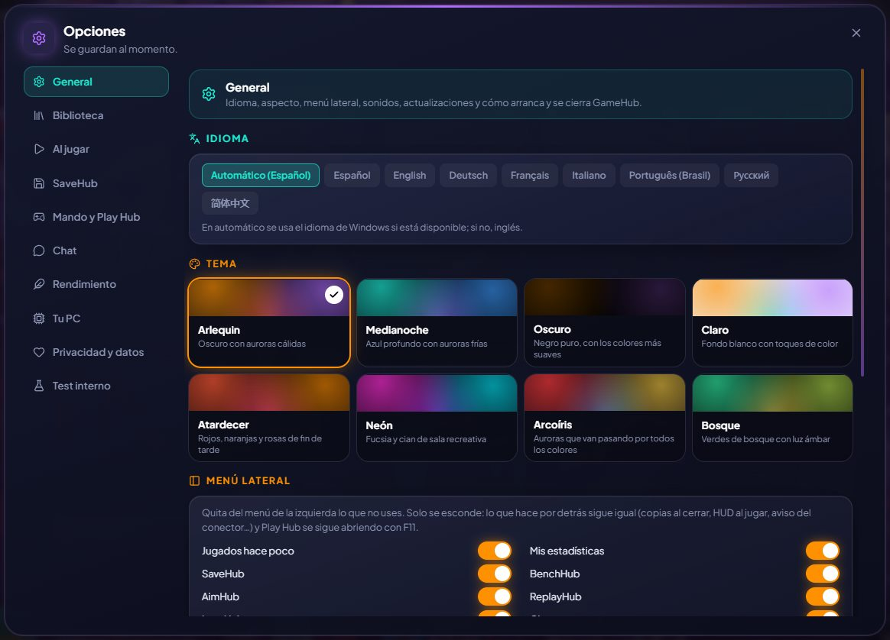

A tu gusto
Temas, idioma y cómo se comporta GameHub.
Elige tema (Arlequin, Medianoche, Oscuro de negro puro o Claro de fondo blanco; con ArlequinPro, también Atardecer y Neón), en español, inglés o chino simplificado. Para equipos con pocos recursos está el modo ligero, que quita animaciones, transparencias y brillos (lo puedes activar ya en la bienvenida).
En la beta, GameHub también está en ruso, portugués (Brasil), alemán, francés e italiano.
GameHub puede arrancar con Windows escondido en la bandeja (para contar tus horas y guardar tus partidas aunque juegues desde otro launcher). Se actualiza solo (si te saltas versiones, te enseña juntas todas las novedades) y la primera vez te enseña tus juegos por tiendas para que quites lo que no sea un juego.
En Opciones → Privacidad y datos puedes mandar al creador de Arlequin una idea o algo que va mal (con tu correo o Discord si quieres respuesta), y arriba en la ventana salen los avisos de Arlequin cuando hay algo importante.
Cómo se usa
- Opciones: cada página explica arriba qué se configura en ella.

¿Lo pruebas?
⬇ Descarga directa 🛍️ Descargar desde Microsoft StoreWindows 10 y 11 (64 bits) · Gratis · Se actualiza solo